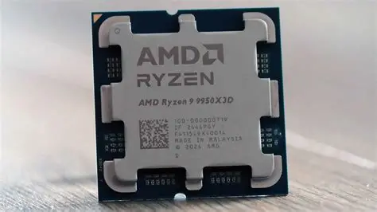
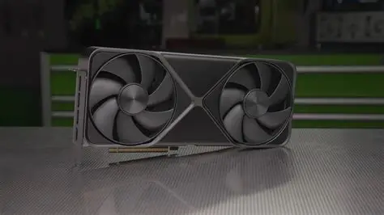
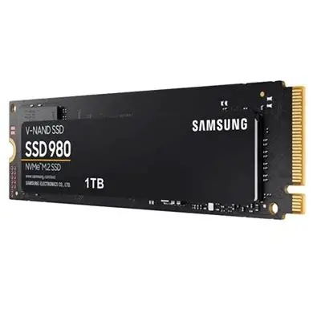
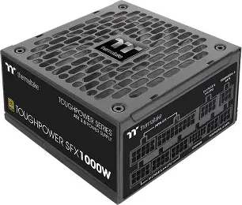
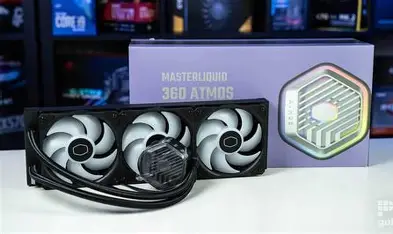
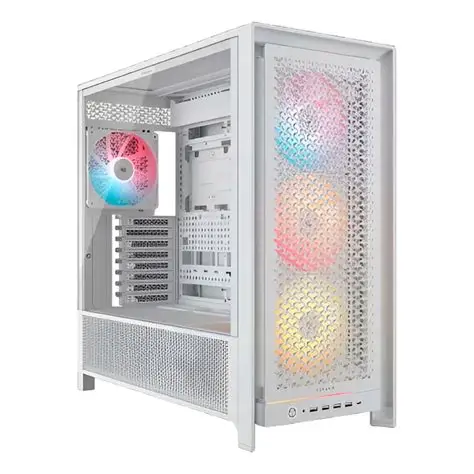
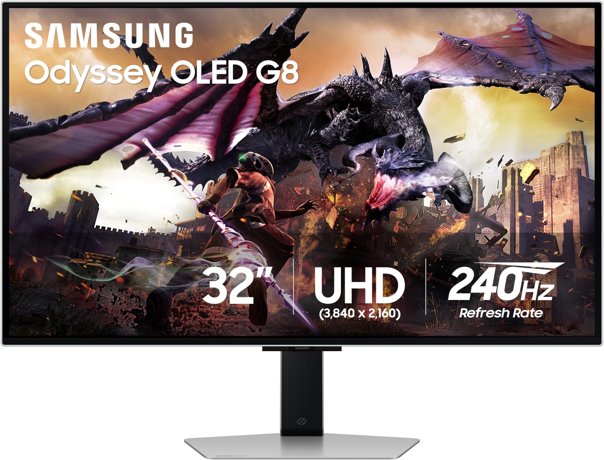

Bitácora de Laboratorio 2026
Alumno: Maximiliano Gastón Renda - 5to Año
Diagnóstico de Componentes (PC Maxi)
Ver Ficha Técnica Completa
Microprocesador
Modelo: AMD RYZEN 9 9950X3D
Arquitectura: 64 bits, x86-64
Ver documento
Memoria RAM CORSAIR VENGEANCE RGB DDR5 6000MHz CL36
Capacidad: 32.0 GB

Tarjeta Gráfica (GPU)
Modelo: RTX 5090 FOUNDERS EDITION

Almacenamiento
Tipo: SAMSUNG 980 EVO NVME M.2

Fuente de Alimentación (PSU)
Potencia: 1000W

Sistema de Refrigeración
Tipo: Refrigeración Líquida

Gabinete (Chasis)
Formato: Mid Tower ATX
Periféricos y Dispositivos E/S
Interfaces físicas de comunicación con el usuario.

Monitor (Salida)
Resolución: 3840x2160 (4K UHD)
Teclado y Mouse (Entrada)
Conectividad: USB 2.4GHz
Auriculares (Salida/Entrada)
Modelo: Airpods 2 pro
Conectividad: Bluetooth
Base de Datos de Conocimiento
Acceso al informe técnico sobre funcionamiento de componentes, arquitectura de buses y resolución de cuellos de botella (Bottlenecks).
Leer Informe Completo de Arquitectura
Armado de Equipos (Presupuestos)
Documentación técnica de presupuestos redactada bajo normas APA.
PC Gaming (Presupuesto Libre)
Enfoque en máximo rendimiento gráfico y sistemas de refrigeración avanzados.
Ver Informe APAPC Oficina (Presupuesto Limitado)
Enfoque en ofimática, durabilidad y mejor relación costo-beneficio.
Ver Informe APALaboratorio: Diagnóstico y Mantenimiento
Documentación técnica de los procedimientos realizados en el entorno de pruebas.
Ficha Práctica de Hardware
Reconocimiento visual e inspección de componentes internos en equipos de descarte.
Ver Ficha CompletadaManual del Técnico
Protocolos de diagnóstico, desarme, uso del multímetro y recuperación de datos (Dongle).
Leer Manual de Protocolos
Soldadura y Recuperación
Prácticas de desoldadura de componentes y reparación de pistas en placas base averiadas.
Base de Datos de Conocimiento (Teoría)
Acceso al informe técnico completo sobre funcionamiento interno, arquitectura de componentes y resolución de cuellos de botella.
Descargar/Ver PDF Teórico Completo
Proyectos Arduino e IoT
Aplicación práctica de programación en C++ y electrónica para resolver problemas del mundo real.

Lentes Asistenciales
Hardware: Microcontrolador ESP32, Sensor Ultrasónico, Buzzer.
Lógica: Detección de proximidad y emisión de alertas sonoras.
Ver Código y Circuito
Basurero Inteligente
Hardware: Placa Arduino, Servomotor, Sensor de Proximidad.
Lógica: Apertura automática del contenedor mediante detección de movimiento.
Ver Código y Circuito